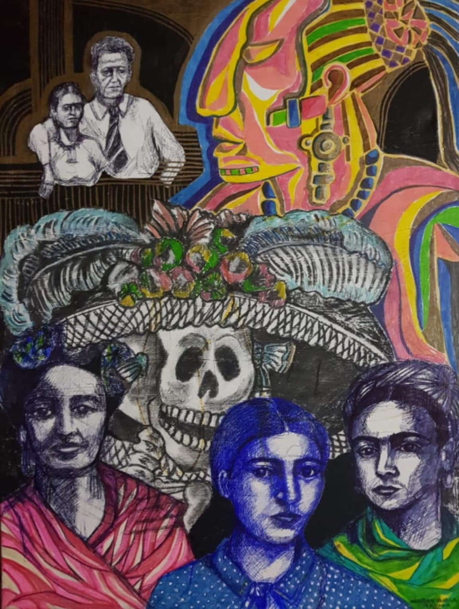

CULTURA MEXICANA
Su cultura tiene un gran prestigio a nivel mundial, cuenta con una actividad turística muy importante, que hacen de esta nación uno de los destinos más visitados del mundo.
Arte
Destaca por su representación de imágenes cotidianas como animales, alimentos, y personas. Se trata de un arte que le da mucha importancia a las tradiciones y las creencias, así como a los productos hechos artesanalmente. Todo suele ser muy colorido y llamativo, con el propósito de llamar la atención en tonalidades muy vivas.
Mexico cuenta con nombres de prestigio internacional como Diego de Rivera, Frida Kahlo, José Clemente Orozco y David Alfaro Siqueiros.
Mexico cuenta con nombres de prestigio internacional como Diego de Rivera, Frida Kahlo, José Clemente Orozco y David Alfaro Siqueiros.
Musica
Los instrumentos prehispánicos eran fabricados de una manera ingeniosa, con materiales poco convencionales como huesos, caparazones de tortugas, semillas, barro, entre otros.
Entre los géneros mexicanos más populares se encuentran el mariachi, los corridos, la ranchera, la banda sinaloense y la norteña. Cabe mencionar que el mariachi cuenta también con el nombramiento de Patrimonio Inmaterial de la Humanidad por la UNESCO.
Entre los géneros mexicanos más populares se encuentran el mariachi, los corridos, la ranchera, la banda sinaloense y la norteña. Cabe mencionar que el mariachi cuenta también con el nombramiento de Patrimonio Inmaterial de la Humanidad por la UNESCO.